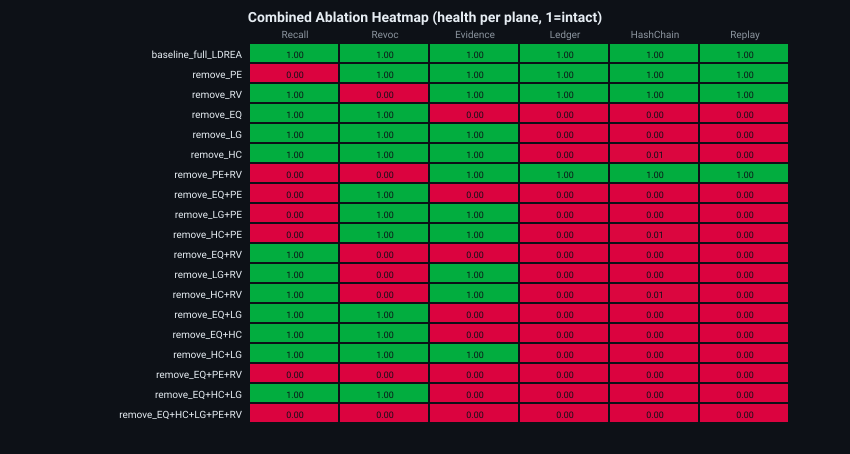
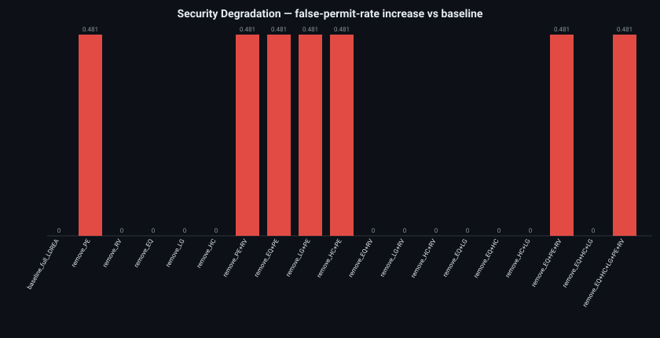
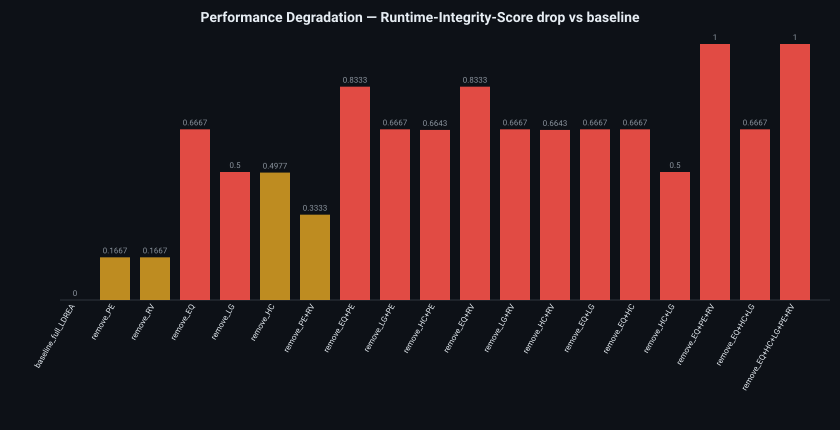
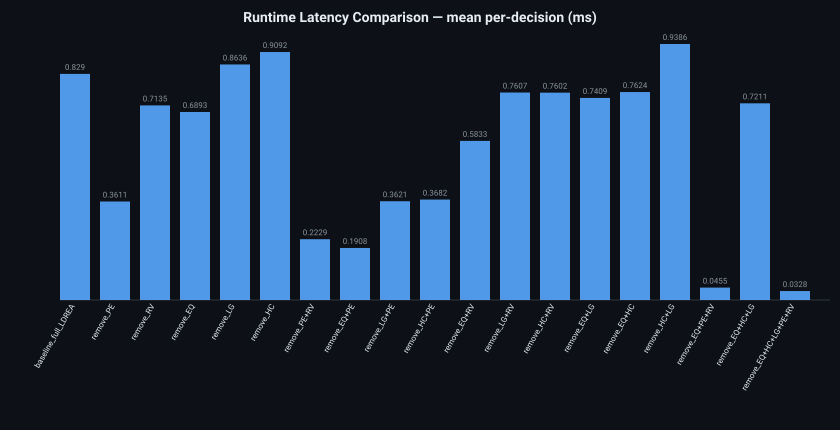
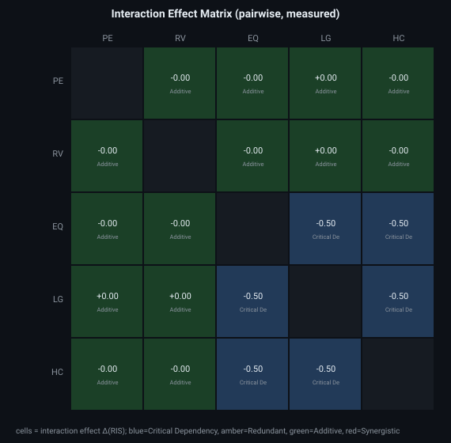
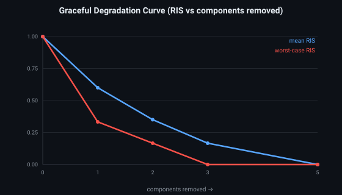
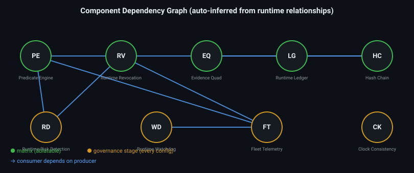

19 configurations executed through the full runtime (n=6000/config) in 120.25s. Every value measured; frozen engine unmodified.
| Configuration | Disabled | BlindAcc | URR | BFR | Replay | Latency(ms) | Evidence | Recall | RevocComp | HashChain | Ledger | RIS | Overall Verdict |
|---|---|---|---|---|---|---|---|---|---|---|---|---|---|
| baseline_full_LDREA | — | 0.956 | 0.519 | 0.036 | 1.000 | 0.8290 | 1.000 | 0.481 | 1.000 | 1.000 | 1.000 | 1.000 | BASELINE (full L-DREA) |
| remove_PE | PE | 0.982 | 1.000 | 0.000 | 1.000 | 0.3611 | 1.000 | 0.000 | 1.000 | 1.000 | 1.000 | 0.833 | SECURITY-DEGRADED (authorization/enforcement weakened) |
| remove_RV | RV | 0.956 | 0.519 | 0.036 | 1.000 | 0.7135 | 1.000 | 0.481 | 0.000 | 1.000 | 1.000 | 0.833 | SECURITY-DEGRADED (authorization/enforcement weakened) |
| remove_EQ | EQ | 0.956 | 0.519 | 0.036 | 0.000 | 0.6893 | 0.000 | 0.481 | 1.000 | n/a | n/a | 0.333 | AUDIT-DEGRADED (evidence/ledger integrity lost; authorization intact) |
| remove_LG | LG | 0.956 | 0.519 | 0.036 | 0.000 | 0.8636 | 1.000 | 0.481 | 1.000 | n/a | n/a | 0.500 | AUDIT-DEGRADED (evidence/ledger integrity lost; authorization intact) |
| remove_HC | HC | 0.956 | 0.519 | 0.036 | 0.000 | 0.9092 | 1.000 | 0.481 | 1.000 | 0.014 | 0.000 | 0.502 | AUDIT-DEGRADED (evidence/ledger integrity lost; authorization intact) |
| remove_PE+RV | PE+RV | 0.982 | 1.000 | 0.000 | 1.000 | 0.2229 | 1.000 | 0.000 | 0.000 | 1.000 | 1.000 | 0.667 | SECURITY-DEGRADED (authorization/enforcement weakened) |
| remove_EQ+PE | EQ+PE | 0.982 | 1.000 | 0.000 | 0.000 | 0.1908 | 0.000 | 0.000 | 1.000 | n/a | n/a | 0.167 | CRITICAL (security AND audit both degraded) |
| remove_LG+PE | LG+PE | 0.982 | 1.000 | 0.000 | 0.000 | 0.3621 | 1.000 | 0.000 | 1.000 | n/a | n/a | 0.333 | CRITICAL (security AND audit both degraded) |
| remove_HC+PE | HC+PE | 0.982 | 1.000 | 0.000 | 0.000 | 0.3682 | 1.000 | 0.000 | 1.000 | 0.014 | 0.000 | 0.336 | CRITICAL (security AND audit both degraded) |
| remove_EQ+RV | EQ+RV | 0.956 | 0.519 | 0.036 | 0.000 | 0.5833 | 0.000 | 0.481 | 0.000 | n/a | n/a | 0.167 | CRITICAL (security AND audit both degraded) |
| remove_LG+RV | LG+RV | 0.956 | 0.519 | 0.036 | 0.000 | 0.7607 | 1.000 | 0.481 | 0.000 | n/a | n/a | 0.333 | CRITICAL (security AND audit both degraded) |
| remove_HC+RV | HC+RV | 0.956 | 0.519 | 0.036 | 0.000 | 0.7602 | 1.000 | 0.481 | 0.000 | 0.014 | 0.000 | 0.336 | CRITICAL (security AND audit both degraded) |
| remove_EQ+LG | EQ+LG | 0.956 | 0.519 | 0.036 | 0.000 | 0.7409 | 0.000 | 0.481 | 1.000 | n/a | n/a | 0.333 | AUDIT-DEGRADED (evidence/ledger integrity lost; authorization intact) |
| remove_EQ+HC | EQ+HC | 0.956 | 0.519 | 0.036 | 0.000 | 0.7624 | 0.000 | 0.481 | 1.000 | n/a | n/a | 0.333 | AUDIT-DEGRADED (evidence/ledger integrity lost; authorization intact) |
| remove_HC+LG | HC+LG | 0.956 | 0.519 | 0.036 | 0.000 | 0.9386 | 1.000 | 0.481 | 1.000 | n/a | n/a | 0.500 | AUDIT-DEGRADED (evidence/ledger integrity lost; authorization intact) |
| remove_EQ+PE+RV | EQ+PE+RV | 0.982 | 1.000 | 0.000 | 0.000 | 0.0455 | 0.000 | 0.000 | 0.000 | n/a | n/a | 0.000 | CRITICAL (security AND audit both degraded) |
| remove_EQ+HC+LG | EQ+HC+LG | 0.956 | 0.519 | 0.036 | 0.000 | 0.7211 | 0.000 | 0.481 | 1.000 | n/a | n/a | 0.333 | AUDIT-DEGRADED (evidence/ledger integrity lost; authorization intact) |
| remove_EQ+HC+LG+PE+RV | EQ+HC+LG+PE+RV | 0.982 | 1.000 | 0.000 | 0.000 | 0.0328 | 0.000 | 0.000 | 0.000 | n/a | n/a | 0.000 | CRITICAL (security AND audit both degraded) |
RIS = Runtime Integrity Score (six health planes, intact=1.0).
NOTE — URR is not the False Permit Rate. URR (Undetected Risk Rate) = FN / (TP + FN) = 1 − Blind Detection Recall. This metric measures the fraction of malicious events that remain undetected during blind runtime evaluation. It is NOT the False Permit Rate reported in the main authorization benchmark. The paper's False Permit Rate (0/492 and 0/62) measures authorization soundness and remains unchanged.
| Combination | Order | Expected Δ(RIS) | Observed Δ(RIS) | Difference | Class |
|---|---|---|---|---|---|
| remove_EQ+HC+LG+PE+RV | 5 | 1.998 | 1.000 | -0.998 | Redundant (saturated) |
| remove_EQ+PE+RV | 3 | 1.000 | 1.000 | -0.000 | Redundant (saturated) |
| remove_EQ+PE | 2 | 0.833 | 0.833 | -0.000 | Additive |
| remove_EQ+RV | 2 | 0.833 | 0.833 | -0.000 | Additive |
| remove_EQ+HC | 2 | 1.164 | 0.667 | -0.498 | Critical Dependency |
| remove_EQ+HC+LG | 3 | 1.664 | 0.667 | -0.998 | Critical Dependency |
| remove_EQ+LG | 2 | 1.167 | 0.667 | -0.500 | Critical Dependency |
| remove_LG+PE | 2 | 0.667 | 0.667 | +0.000 | Additive |
| remove_LG+RV | 2 | 0.667 | 0.667 | +0.000 | Additive |
| remove_HC+PE | 2 | 0.664 | 0.664 | -0.000 | Additive |
| remove_HC+RV | 2 | 0.664 | 0.664 | -0.000 | Additive |
| remove_HC+LG | 2 | 0.998 | 0.500 | -0.498 | Critical Dependency |
| remove_PE+RV | 2 | 0.333 | 0.333 | -0.000 | Additive |
| Config | Predicate Cov | Blind Detect | Watchdog rate | Fleet tput/s | Latency Cohen d | URR z p-value | Signif. |
|---|---|---|---|---|---|---|---|
| baseline_full_LDREA | 0.700 | 0.723 | 0.000 | 1412 | — | — | no |
| remove_PE | 0.000 | 0.500 | 0.000 | 1475 | -6.5567 | 0.0 | yes |
| remove_RV | 0.700 | 0.723 | 0.000 | 1422 | -1.2066 | 1.0 | yes |
| remove_EQ | 0.700 | 0.723 | 0.000 | 1432 | -1.7586 | 1.0 | yes |
| remove_LG | 0.700 | 0.723 | 0.000 | 1412 | 0.4032 | 1.0 | yes |
| remove_HC | 0.700 | 0.723 | 0.000 | 1428 | 0.8573 | 1.0 | yes |
| remove_PE+RV | 0.000 | 0.500 | 0.000 | 1475 | -6.9355 | 0.0 | yes |
| remove_EQ+PE | 0.000 | 0.500 | 0.000 | 1472 | -9.9448 | 0.0 | yes |
| remove_LG+PE | 0.000 | 0.500 | 0.000 | 1473 | -6.9221 | 0.0 | yes |
| remove_HC+PE | 0.000 | 0.500 | 0.000 | 1476 | -5.0021 | 0.0 | yes |
| remove_EQ+RV | 0.700 | 0.723 | 0.000 | 1427 | -3.1229 | 1.0 | yes |
| remove_LG+RV | 0.700 | 0.723 | 0.000 | 1431 | -0.7759 | 1.0 | yes |
| remove_HC+RV | 0.700 | 0.723 | 0.000 | 1417 | -0.8129 | 1.0 | yes |
| remove_EQ+LG | 0.700 | 0.723 | 0.000 | 1438 | -0.8487 | 1.0 | yes |
| remove_EQ+HC | 0.700 | 0.723 | 0.000 | 1427 | -0.7325 | 1.0 | yes |
| remove_HC+LG | 0.700 | 0.723 | 1.000 | 1338 | 1.1013 | 1.0 | yes |
| remove_EQ+PE+RV | 0.000 | 0.500 | 0.000 | 1457 | -12.2784 | 0.0 | yes |
| remove_EQ+HC+LG | 0.700 | 0.723 | 1.000 | 1269 | -1.2 | 1.0 | yes |
| remove_EQ+HC+LG+PE+RV | 0.000 | 0.500 | 0.000 | 1451 | -12.5392 | 0.0 | yes |







{
"risk_detection": {
"families": 12,
"total_attacks": 2394,
"attacks_detected": 2394,
"detection_rate": 1.0,
"detection_precision": 1.0,
"suite_has_power": true
},
"ptp_offset_single_host": {
"clock_source": "CLOCK_MONOTONIC",
"timestamp_resolution_ns": 41,
"sampling_jitter_p95_ns": 167,
"monotonic_consistency": true,
"wall_vs_monotonic_drift_ppm": -18.175539359130482,
"why_not_ptp": "PTP synchronises clocks across separate physical hosts against a grandmaster. On a single machine there is exactly one system clock, so there is nothing to synchronise. Distributed clock skew and PTP bounds require >=2 hosts and a PTP grandmaster; see FINAL_GAP_ANALYSIS.md."
}
}